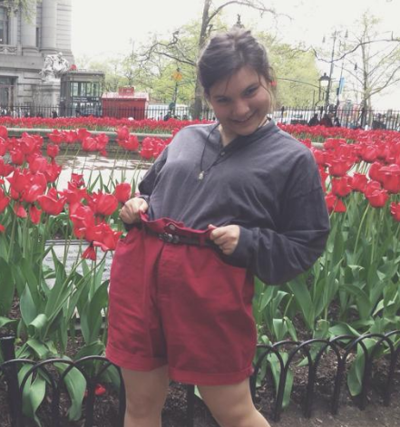
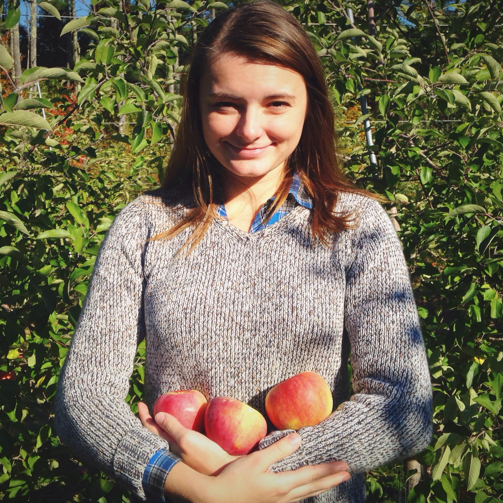
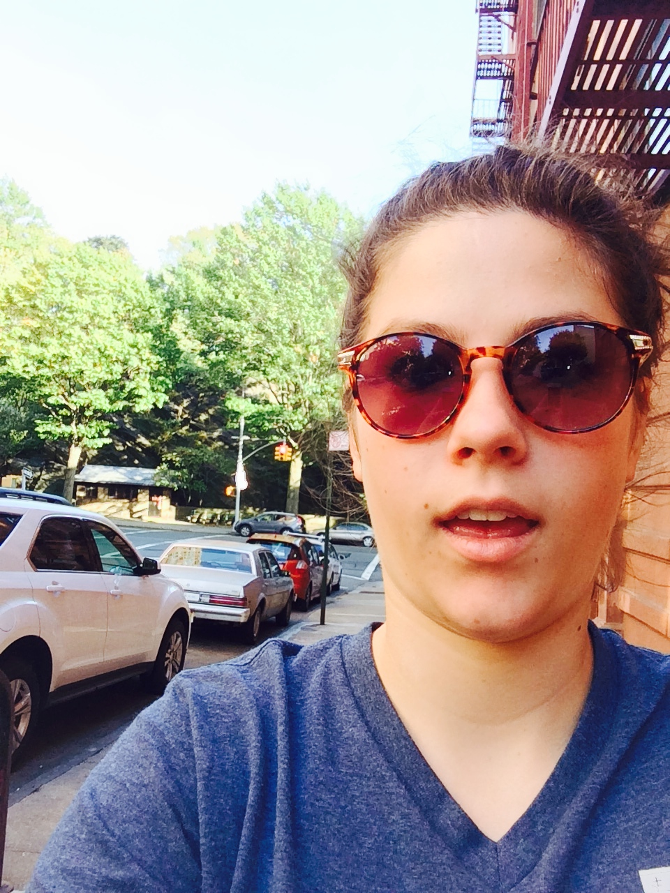

Leah Contreras

She's in charge of the execution of the administrative and interpersonal aspects of the house, the empowerment of the executive team, and she's your representative on the council. You should talk to her about the British Monarchy, Cole Porter, and the art of making tea.
|
Abby Narbe

She's in charge of welcoming the freshmen into the House and helping them adjust to New York City. You should talk to her about coffee, Gilmore Girls/ The Office, and Snow.
|
Darien Evans

She's here to lead our house in the pursuit of honor and the formation of authentic relationships. Talk to her about North Carolina, James Taylor, candy, the Olympics, and Jane Austen and/or Alexandre Dumas works.
|
Alli O'Donnell

She's hear to help you figure out your education and guide you into academic well-being. Talk to her about A Room with a View, Ben Howard and Penny and Sparrow, espresso, long sunset walks in the park, and her cat, Professor Charles Finnius Flockmocker III.
|
Archbishop of Holy Intercession
Annette Turnbaugh

She will lead QE1 bible study and other spiritual endeavors! Talk to her about finding a church, hosting dinner parties, procrasti-baking, grilled cheese, food in general, and how to takeover the dance floor.
|
Dame High Commander of Conquests
Morgan Siedell

She is in charge of corralling the troops for each competition and keeping the morale soarin’. Talk to her about Bob Dylan, Country Music, and running. Ask her to wink if you want a good laugh.
|
Tendai Savage

She's the treasurer of the house and deals with all things money related. You should talk to her about anything comic book related and about where to shop.
|
Master General of Heroic Endeavors
Julia Keesler
She's in charge of organizing and keeping queens up-to-date on everything that is happening concerning Interregnum. Talk to her about ice-cream, puppies, house concerts and all things "vintage".
|
Dame High Commissioner of Notable Gatherings
Lis Stanford

She has answers to your questions about House Events. Talk to her about film and/or Wes Anderson, cats, comedy, and anything dealing with the fine arts. She also does impressions.
|
Lady Chancellor and Private Secretary to the Sovereign
Mary Losiak

She's keeping in touch with Alumnae and helping start a scholarship fund for girls in the House! You should talk to her about Poland, 501c3s, and street art.
|
Jessica Mathews

She is in charge of keeping you up-to-date with what is going on in the House by creating and maintaining this website and updating QE1's social media presence. You should talk to her about live music, Chick-Fil-A Sauce, Australian coffee, and how to fall off a zipline.
|